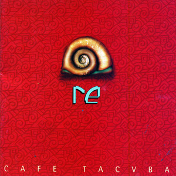
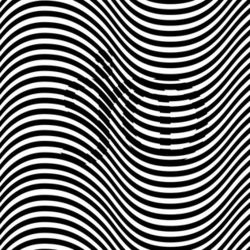

Obras Destacadas

Re (1994)
Considerado uno de los mejores discos de rock latinoamericano de la historia.
Ver Obra →
SINO (2007)
Un disco con toques de rock clásico. Incluye el exitoso tema "Volver a Comenzar".
Ver Obra →
Cuatro Caminos (2003)
Ganador del Grammy. En este disco dejaron la caja de ritmos para usar batería real.
Ver Obra →
Revés/Yo Soy (1999)
Un álbum doble muy experimental. Ganó el Grammy Latino a Mejor Álbum de Rock.
Ver Obra →